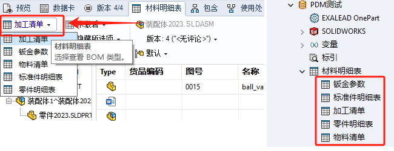
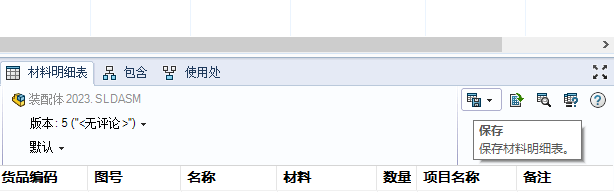
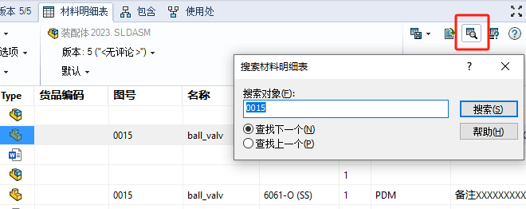

PDM材料明细表
使用材料明细表对话框来创建材料明细表 (BOM) 模板，以显示零部件信息；模板可以多个；
新建BOM表
选择类型。在所选列里，进行【新列/删除列】操作。编辑所选列的变量进行属性的读取
在PDM文件夹底下预览处使用BOM表，可以看到【材料明细表】内容里的列信息就是我们步骤2编辑的。（注意这里需要我们在数据卡里的属性才能被读取到）
客户端
清单类型
层级选择
缩进
仅顶层
仅零件
显示树
显示/隐藏树结构
激活显示状态
显示所选项
“最新项”和“如原样”
您可在用于不同版本的装配体零部件的计算材料明细表视图间切换。此功能在创建装配体后修改装配体零部件的情况下很有用。
您可计算所选版本的装配体材料明细表：
“如原样”：•使用创建版本时所选版本的装配体最初参考的零部件版本
“最新项”：•使用所选版本的装配体参考的最新零部件版本
内容输出
另存.BOM文件
打开csv表格
搜索内容
比较清单内容
当您比较两个材料明细表时，两个材料明细表中的所有条目的集合出现在材料明细表比较中。 彩色表示材料明细表之间的差异。
| 每个单元格左侧的绿色栏表示添加的行。 | |
|---|---|
| 单元格左侧的橙色栏表示编辑的单元格。 方括号显示材料明细表中您选取用来进行比较的值。 | |
| 每个单元格左侧的红色栏表示删除的行。 方括号表示材料明细表中您选取用来进行比较的数据。 |

参考
查找变量
1
2在所选配置列表查找变量
3